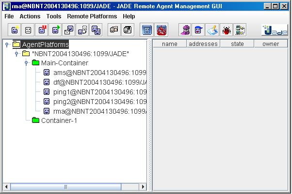
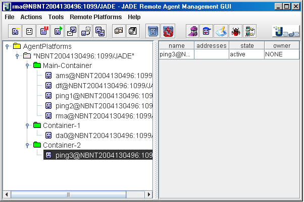

In previous section we shown how to start the JADE Main Container. In this tutorial we will see how to start peripheral containers thus creating a distributed JADE platform.
Keep the Main Container activated in Tutorial 2 on, then open another shell,
move to the jade directory and type
java -cp lib\jade.jar;classes jade.Boot -container
An output similar to that presented in previous section appears. If you look at the RMA GUI (i.e. the
Management Console), beside the Main Container, you will see a new container called Container-1
as depicted below.

Figure 1. Multiple containers in the JADE Management Console
The -container option tells JADE to start a peripheral container instead of a Main Container.
A peripheral container cannot live "alone" and must connect to a Main Container at startup. Therefore
typically it is necessary to tell it where to find the Main Container to connect to. This is done by
means of the -host <host-name> and -port <port-number>. In our case it was
not necessary to specify such options as the Main Container is running on the local host and on the JADE
default port 1099. Therefore the command line we typed is fully equivalent to
java -cp lib\jade.jar;classes jade.Boot -container -host localhost -port 1099
In the RMA window select the newly created container Container-1 and then launch a DummyAgent clicking on the Start DummyAgent button as we did in previous section. The DummyAgent GUI appears, but, unlike the previous section, this time you will see that the DummyAgent is running in Container-1. You can try sending messages from the DummyAgent to the two PingAgents ping1 and ping2 running in the Main Container.
Invoke the DummyAgent and use it to send a message to ping0 in the same way as was done in Tutorial 1. (Fill in the receivers=ping0@Frodo:1099/JADE, communicative act=QUERY-REF, Content=ping) If you examine the return message it is the same as in Tutorial 1, namely "(pong)" or "alive", depending on your JADE version..
Try changing the commutative act to INFORM and send the message to ping0. You will get a NOT-UNDERSTOOD reply. Look at the content of this message for an example of the SL language constructed by JADE.
Up to now we created a JADE platform distributed over two processes running in the same host.
Now we will create another container on a second computer thus obtaining a fully distributed platform.
For the sake of simplicity let's assume the host where we worked up to now (i.e. the one we started our
Main Container and our peripheral container Container-1 on) is called frodo. Let's also
assume we have a second host called bilbo networked with the first one.
Move to bilbo and unzip the JADE binary, source and examples distribution somewhere as you did
in frodo. Then compile the examples opening a shell, moving to the jade directory and typing
ant examples
Finally launch a new peripheral container connecting to the Main Container in
frodo with a third PingAgent called ping3 on top by typing the command line below
java -cp lib\jade.jar;classes jade.Boot -container -host frodo -port 1099 -agents ping3:examples.PingAgent.PingAgent
The usual JADE runtime output saying that a container called Container-2 is up and running should
appear. Looking at the RMA GUI in frodo you should see a situation similar to that depicted in Figure2.

Figure 2. The JADE Management Console showing a distributed platform
Using the DummyAgent in frodo send a message to the ping3 PingAgent in bilbo and check that ping3 replies as expected. Finally using the RMA Management Console in frodo start a forth PingAgent in bilbo: as we did in previous section right-click on Container-2, select Start New Agent, insert the name and fully qualified class name in the Start New Agent dialog box and press OK.